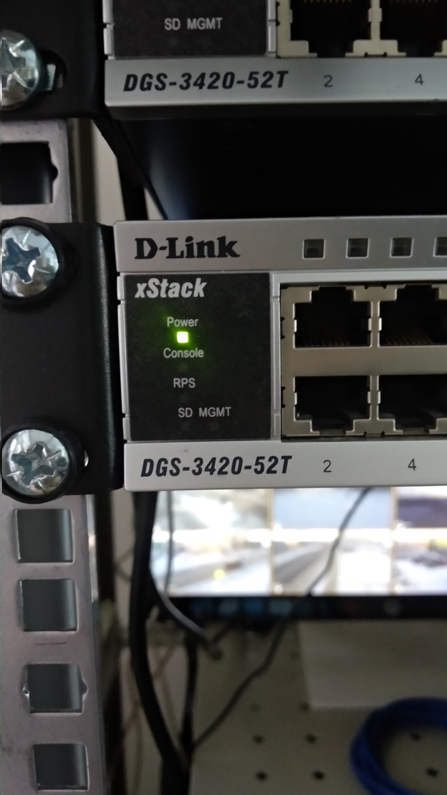
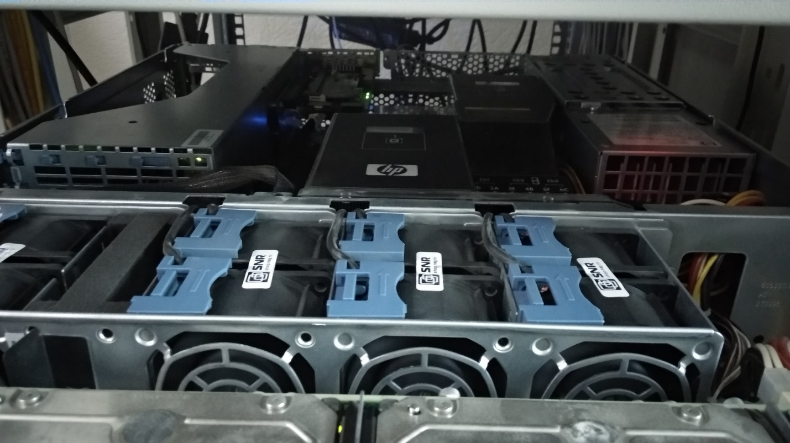
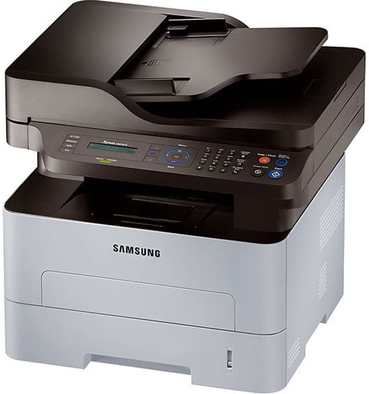

Аппаратное обеспечение включает в себя все физические части компьютера, но не включает программное обеспечение, которое им управляет, и не включает информацию, имеющуюся на компьютере. Аппаратное обеспечение без программного обеспечения представляет из себя всего лишь железо. Без программ аппаратура является просто железом, а без аппаратуры программы будут никому не нужными для выполнения каких-либо действий.
В Администрации имеются устройства:

Рисунок 1.3 Коммутатор D-Link DGS-3420-52T

Рисунок 1.4 Коммутатор D-Link DGS-3420-52T
Коммутаторы обеспечивают высокую плотность гигабитных портов для подключения рабочих мест, оснащены портами SFP и 10 Gigabit SFP+ и поддерживают расширенные функции программного обеспечения.

Рисунок 1.5 Samsung M267
Лазерная технология печати с сетевыми функциями, хорошо подходит для малых групп. Благодаря настраиваемому дисплею и кнопкам прямого запуска, позволяет повысить производительность работы.